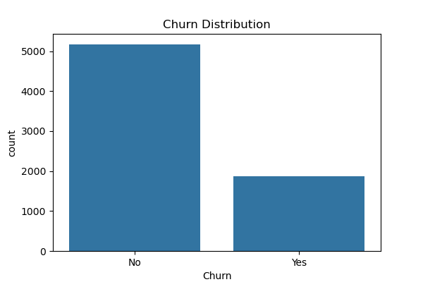
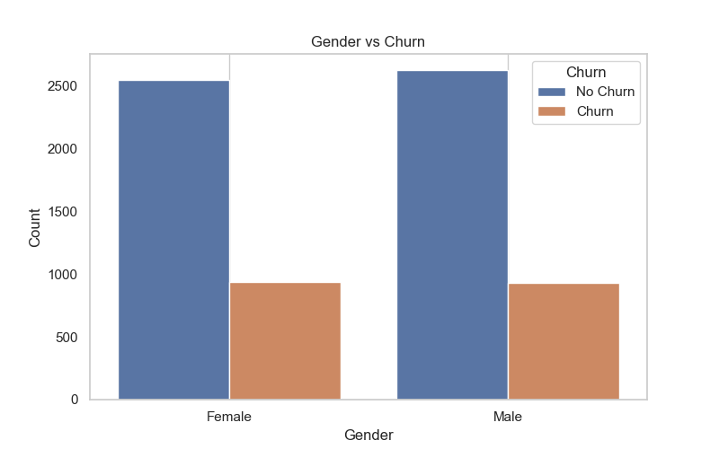
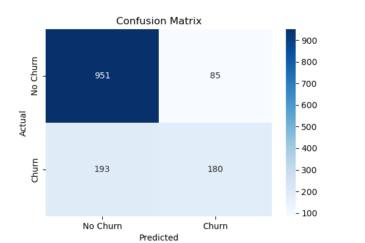

Customer churn, the loss of clients or customers, is a critical issue in the telecommunications industry. This report aims to analyze customer churn patterns, identify factors contributing to churn, and develop a predictive model to assist the company in retaining customers. By leveraging data analysis techniques, we can derive actionable insights that can significantly enhance customer retention strategies.
The first step in the analysis involved cleaning the dataset to ensure high-quality input for the modeling process. Irrelevant columns, such as customerID, were removed to simplify the dataset. Additionally, the TotalCharges column, which contained missing values, was converted to a numeric format, and missing entries were replaced with the median value. This preprocessing step is vital for maintaining the integrity of the analysis and ensuring accurate model predictions.
Feature engineering is the process of using domain knowledge to create new input features that make machine learning algorithms work better. In this project, we created a new categorical feature, tenure_group, which groups customer tenure into bins. This helps in understanding how customer loyalty changes over time and facilitates better predictions based on customer lifespan.
The first visualization shows the overall distribution of churn within the customer base:
This chart illustrates the proportion of customers who have churned (Yes) versus those who have not (No). A significant number of churned customers can indicate potential issues with service quality or customer satisfaction that need to be addressed.
Next, we analyze the distributions of numerical features that may affect churn:
The tenure distribution shows how long customers have been with the company. A noticeable concentration of customers with short tenure suggests that the company may need to focus on enhancing the onboarding experience and customer satisfaction early in the relationship.
This histogram illustrates the distribution of monthly charges among customers. The analysis reveals that many customers are paying lower monthly charges, which could indicate price sensitivity. It’s essential to evaluate if the pricing strategy aligns with customer expectations and market standards.
This plot visualizes the total charges incurred by customers. Understanding the distribution of total charges can help the company assess which customer segments contribute most to revenue and identify those that may be at risk of churning due to high costs.
We also explore categorical features and their relationships with churn:
This visualization depicts how different categorical variables, such as payment methods or contract types, correlate with churn rates. Identifying patterns here can highlight specific groups of customers that are more likely to leave, allowing for targeted retention efforts.
For predictive modeling, a Random Forest Classifier was selected due to its robustness and ability to handle both numerical and categorical data. The model was trained on a training dataset, with the remaining data reserved for testing. This approach helps in assessing the model's ability to generalize to unseen data.
The Random Forest model achieved an impressive accuracy of 80.27% on the test dataset. The following confusion matrix illustrates the performance of the model:
The confusion matrix indicates that the model correctly identified a high percentage of churned customers, highlighting its effectiveness in predicting customer behavior.
[[951 85]
[193 180]]
This matrix shows:
The accuracy of the model is calculated as:
Accuracy = (TP + TN) / (TP + TN + FP + FN) = (180 + 951) / (180 + 951 + 85 + 193) ≈ 80.27%
A high number of true positives indicates that the model effectively identifies customers who are likely to churn, while a low number of false positives is critical for reducing unnecessary retention costs.
In conclusion, this analysis provides valuable insights into customer churn behavior. By identifying key features influencing churn, the company can implement targeted retention strategies. The predictive model developed in this report serves as a tool for anticipating customer churn and enhancing customer relationship management.
Future analyses could incorporate additional features, such as customer feedback and external market conditions, to further enhance prediction accuracy. Additionally, implementing a customer feedback loop could provide ongoing insights into customer satisfaction and service improvements.